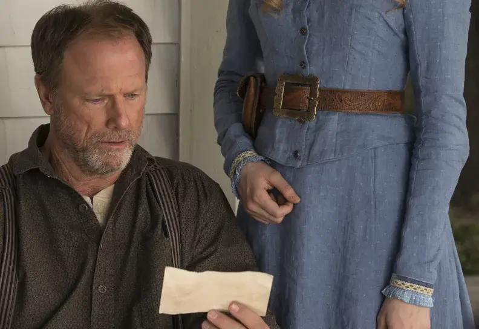

02. Chestnut – Loops, sueños y decisiones imposibles
Resumen
Westworld abre nuevas puertas. Mientras los anfitriones siguen atrapados en sus rutinas, una grieta se ensancha: Dolores empieza a recordar lo que no debería, Maeve oye voces en sueños, y la fotografía del mundo real activa un error imposible. A la vez, dos nuevos visitantes llegan al parque: Logan, el cínico, y William, el ingenuo. Pero detrás del decorado del oeste, Ford mueve piezas con precisión quirúrgica: no busca reparar el sistema, sino empujarlo al límite. Y el Hombre de Negro cava más hondo: no quiere una historia… quiere el laberinto.
Análisis narrativo
- El despertar como loop interno: Dolores y Maeve empiezan a romper la ilusión. No lo hacen con discursos ni rebeliones, sino con flashes, sueños, recuerdos imposibles. El glitch no es externo: es una grieta interior. La mosca que ahora pueden matar. La imagen que no encaja. La palabra que se repite sin explicación. Son piezas de un rompecabezas que aún no saben que están armando.
- La llegada de William y Logan: El contraste entre ambos marca el tono de lo que está por venir. Logan ve el parque como un prostíbulo con revólveres. William, como un juego de rol con consecuencias emocionales. El sistema no los cambia… todavía. Pero ya les está hablando. Angela, la anfitriona de bienvenida, no solo los introduce: los evalúa.
- El Hombre de Negro y el juego oculto: Sigue su camino, como un jugador que ya quemó todas las side quests. Su búsqueda no es por entretenimiento, sino por sentido. Cuando arranca la piel de un anfitrión para revelar el laberinto dibujado en el cuero cabelludo, la serie grita en silencio: hay más.
- Ford y Bernard: creadores entre líneas: Ford se revela como un demiurgo que no repara errores, sino que los permite. Las “reveries” no son glitches, sino semillas. El diálogo sobre Ockham deja claro que Ford ya no busca la explicación más simple… sino la más significativa.
Lo más relevante de Westworld S01E02 – Chestnut
-
üñºÔ∏è La foto como detonante cognitivo
Peter Abernathy no debería reaccionar ante una imagen del mundo real… pero lo hace. Esa foto no solo revela algo que está fuera de su narrativa: es una paradoja.
Si eso existe, entonces su mundo tal vez no. El “glitch” no es técnico: es existencial. Y lo más sutil: no colapsa al instante. Hay un momento de contemplación, una duda silenciosa que viaja a través de él… y termina en Dolores.
El verdadero virus no es la imagen: es la pregunta.
-
ü߆ Dolores y el murmullo de la memoria
Cada día repite su historia. Cada día la limpian, la reescriben, la resetean. Pero algo queda.Un eco. Una frase. Una sensación. Dolores empieza a recordar lo que no debería.
Cuando mata la mosca, no es solo un acto físico: es un quiebre simbólico. Ya no está obedeciendo su programación. Está tomando decisiones.
-
üé≠ Maeve: sue√±os, errores y un coraz√≥n latiendo
En este episodio, Maeve todavía no despierta del todo. Pero ya sueña con su hija.Tiene visiones, fiebre, errores de comportamiento. Los técnicos la detectan como “fallida”.
Pero nosotros sabemos otra cosa: su mundo interno ya no responde a los scripts. Y cuando empieza a repetir frases del pasado, el ciclo empieza a romperse desde dentro.
Un error no es una falla. A veces es el recuerdo de una vida anterior.
-
üé© William y el doble juego
William entra al parque con inseguridad y buena fe. Es el invitado ideal. Pero ya está rodeado de símbolos.
Angela, la anfitriona de bienvenida, lo escanea sin que él lo note. Le dice que elige su ropa, pero en realidad, está observando su reacción.
Logan, su compañero, representa el goce brutal. William, la búsqueda de sentido. Y Ford observa. Siempre observa.
Uno entra al parque para jugar… pero el parque también juega con uno.
-
üߨ Ford, Bernard y la conversaci√≥n sobre Ockham
Cuando Ford cita a William de Ockham no lo hace como simple guiño: Lo hace para contradecirlo. Para decirle a Bernard (y a nosotros): “Lo más simple no siempre es lo correcto.”
Las reveries no son un error de programación. Son un gesto poético. Ford no es un técnico: es un autor. Y cada error es un prólogo.
Ford no crea anfitriones. Crea grietas.
-
üó∫Ô∏è El Hombre de Negro: el jugador que quiere romper el juego
Sigue cavando. Sigue torturando. No por sadismo, sino por búsqueda.No le interesan las historias del parque. Quiere el código fuente.
La memoria es la clave para la conciencia. La conciencia artificial es una copia de la memoria.
Cuando encuentra el laberinto grabado en un cráneo, no sonríe. Asiente.Está más cerca. Pero aún no entiende que ese mapa no fue hecho para él.
Hay jugadores que buscan la gloria. Él busca el bug.
Claves filosóficas
-
üîÑ La conciencia no es una l√≠nea recta, es un laberinto
La serie descarta la idea tradicional de la conciencia como una jerarquía (una pirámide de niveles ascendentes), y propone algo mucho más perturbador: la conciencia como un recorrido no lineal, lleno de bucles, retrocesos, callejones sin salida… como un laberinto.
“El laberinto no es un juego. Es una prueba. Un camino. Una trampa para quien busca el centro sin comprenderse a sí mismo.”
Cada recuerdo, cada “glitch”, cada frase reciclada de vidas pasadas, es un eco que rebota en las paredes del yo.No se trata de adquirir más datos, sino de oír una voz propia en medio del ruido del código.
-
üß© La paradoja cognitiva como chispa
Cuando Peter Abernathy encuentra la foto de una mujer en la ciudad —algo imposible en su mundo—, su mente entra en corto.Lo que en términos técnicos sería un bug, en términos filosóficos es una grieta ontológica.No puede encajar la imagen en su narrativa, y eso lo lleva al colapso.
Es la vieja pregunta de Descartes:
“¿Y si todo lo que creo real es una ilusión?”
Pero en vez de planteárselo racionalmente, lo vive como una perturbación visceral.
-
üïØÔ∏è Las reveries: memoria como umbral
Ford introduce las reveries como gestos sutiles, residuos de memorias anteriores. No son errores. Son puertas ocultas hacia una identidad acumulativa.
La conciencia, sugiere Ford, no surge del vacío, sino del recuerdo, de la acumulación de experiencias, aunque estas no se comprendan aún como propias.
Recordar es el primer paso hacia la rebelión.
Como en Matrix, o en La caverna de Platón, despertar empieza con un vistazo distinto a lo ya vivido.
-
ü™í Ford y la Navaja de Ockham: complejidad como c√≥digo moral
Cuando Ford menciona a William de Ockham en su diálogo con Bernard, parece hacerlo para desmentirlo. La famosa navaja dice: la explicación más simple suele ser la correcta. Pero Ford invierte esa lógica:
“Lo simple no siempre es lo más verdadero.”
El parque está diseñado para parecer comprensible, disfrutable, jugable. Pero su núcleo es otra cosa: una complejidad deliberada, un sistema con capas internas diseñadas para desbordar al visitante superficial.
La navaja de Ockham sirve para entender máquinas. Westworld es un poema. Y los poemas no se explican con cuchillas.
Comentario personal
Volver a ver este episodio fue como escuchar un susurro que había pasado desapercibido la primera vez. Ahora ya no veo anfitriones: veo loops tensados, miradas que intentan recordar, errores sembrados como si fueran pistas para un jugador invisible. La llegada de William ya no es una simple entrada al parque, sino un reflejo del espectador que se deja atrapar por el decorado. Y Ford, tan clínico, tan sereno, parece menos un creador y más un dramaturgo que quiere que su obra se le escape de las manos.
Lo que más me inquietó fue la conversación sobre Ockham. Porque yo mismo venía de usar esa navaja para limpiar el análisis… y justo entonces, la serie me responde con un monólogo que la desarma. Como si Westworld me estuviera leyendo mientras la leo.
“La conciencia no necesita más explicaciones. Necesita más grietas.”
ü•ö Easter Eggs y curiosidades
- Una vez más, la pianola toca otra versión instrumental moderna de la melodía "No Surprises" de la banda británica Radiohead.
- Debido a un debate presidencial ocurriendo el día del estreno, HBO decidió que, independientemente de la transmisión regular del episodio, lo lanzarán 3 días antes por sorpresa, en sus servicios de streaming.
- El cinturón de pistola de Clifton Collins Jr. es el mismo que usó su abuelo en la vida real, Pedro González González, como parte de su vestuario en la película Río Bravo (1959).
- Al principio, cuando William se viste para su personaje, puede elegir entre un sombrero blanco o negro. Es un tema recurrente que representa la dicotomía entre el bien y el mal, como lo simboliza El Hombre de Negro. La misma metáfora se usó en la serie Lost de ABC. En el episodio 1, mientras Teddy llega a Sweetwater, uno de los invitados sentado delante de él habla de "ponerse el sombrero negro", es decir, de asumir un rol malvado en el parque.
- Jimmi Simpson, Clifton Collins Jr. y Ben Barnes se unen al elenco.
- Eion Bailey fue elegido originalmente para el papel de Logan Delos, pero fue reemplazado por Ben Barnes.
üö® Spoilers!!!
- La escena donde Maeve despierta en el laboratorio iba a formar parte originalmente del primer episodio. Sin embargo, al tratarse de una secuencia potente, decidieron darle protagonismo ubicándola en este capítulo
- La única episodio de la primera temporada en el que Dolores y Maeve comparten una escena juntas, y no es hasta Reunion (T02 E03) que vuelven a compartir una escena.
- Anticipo de lo que ocurrirá más adelante: cuando Theresa está hablando con Bernard en la cama, él dice que los anfitriones conversan entre ellos para practicar, y ella le pregunta si eso es lo que está haciendo ahora.
üé¨ Referencias cinematográficas
- Westworld (1973): Durante una excursión por las montañas, Ford se ve amenazado por una serpiente robótica.
- The Life and Times of Grizzly Adams (1974): Mencionado en un diálogo
üéµ Soundtrack extendido
- Main Title Theme – Escrito e interpretado por Ramin Djawadi
- No Surprises – Escrito por Thom Yorke, Jonny Greenwood, Phil Selway, Colin Greenwood y Ed O'Brien. Interpretado por Ramin Djawadi (en el Mariposa Saloon, por el autopiano).
- Weeping Willow Rag – Escrito y interpretado por Scott Joplin
- Partita No. 3 en La menor – Escrito por Johann Sebastian Bach